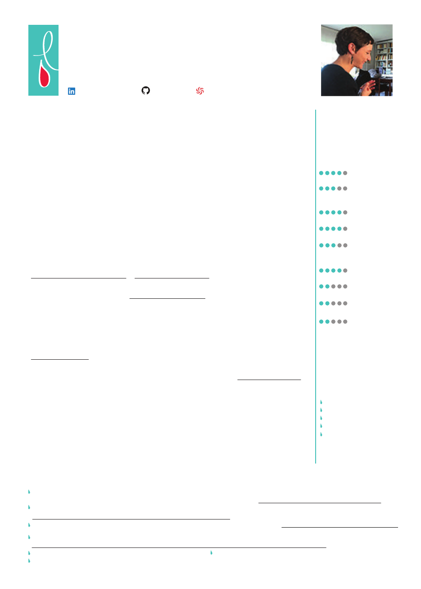

Langues
Anglais (courant)
Italien (notions)
Espagnol (notions)
Hobbies
Cuisine, adhésion AMAP
Jardinage (bouturage)
Randonnée & escalade
Fabrication de carnets
Soutien à l’association
Médecins du Monde
Formations
2018 : Développeur logiciel Javascript, Wild Code School (en cours)
2014 : Master 2 Création et Édition Numériques, mention «Très Bien», Université Paris 8
2012 : Licence de Philosophie, Université Paris I Panthéon-Sorbonne
2010 : L1 en bi-licence Droit - Philosophie, Université Paris I Panthéon-Sorbonne
2009 : Hypokhâgne, lycée Champollion de Grenoble
2008 : Bac Littéraire, mention « Bien », lycée Paul Langevin (Suresnes)
Louise Foussat
Développeuse JavaScript Junior - ES6 / Node.js / React
Gestion de projet digitaux, testing, e-commerce, SEO, ergonomies
28 Bd de Magenta, 75 010, Paris
(+33) 6 60 07 75 89 - louisefoussat@gmail.com
27 ans
Linkedin : Louise Foussat - Github : lfoussat - Codewars : lfoussat
Compétences
JavaScript, Node.js, React
MySQL, PostgreSQL, Knexjs
HTML5, CSS3, Bootstrap,
Semantic UI
SCRUM
Magento, WordPress
Photoshop, Illustrator,
Indesign, Sketch
Première, After Effects
Php, C#
Unity, Maya
Réalisations personnelles
Le 4e Nadar, Prototype dʼune app React Native complémentaire à lʼexposition Nadar, prochainement à la BNF
Prix du jury, Hackaton en collaboration avec l’école Sup de Création & la BNF - https://github.com/lfoussat/nadar-4-native
Wildeer, Jeu interactif réalisé en JavaScript, système de connexion/authentification/page profil (Node.js), ranking
https://github.com/WildCodeSchool/paris-0218-w1lDe3r-keurkeur/
Yoga Alice, Site internet dʼune professeur de yoga (projet en cours), avec Node.js - https://github.com/lfoussat/yoga-alice/
Urbi, Projet de mobilier urbain tactile & connecté (abribus innovant)
http://www.crossmedias.fr/fr/2013/10/prototype-etudiant-de-mobilier-urbain-interactif-et-innovant-urbi/
Eatman, Jeu interactif réalisé en javascript (packman) Juliet, Site d’un musicien réalisé en Flash (Actionscript 3.0)
Amazing Drawing, Jeu interactif réalisé en C# et destiné à la kinect, conception de projet et développement du jeu
Expériences professionnelles
Mai - Juil. 2018 : Développement de Websips (éditeur de contenus web), Start The F Up
- Guidelines : Backend API Node.js, frontend ReactJS/Redux, routing Express/Reach router, database
PostgreSQL (via knex.js), git workflow (Gitlab), interface admin CRUD , linter ESlint, responsive,
Semantic UI, user authentication & roles (Passport.js), upload via Multer S3/Amazon S3
- Projet : interface utilisateur & authentification, interface de gestion de sips (contenus type SIP News),
interface d’édition de sip (édition en temps réel, réorganisation des éléments via un système de drag
& drop), preview responsive de sip (URL publique), export de la sip (génération d’un embed)
Déc.2017 - Janv. 2018 : Audit du site web www.askandy.co, AskAndy (STATION F)
Mars 2016 - Oct. 2017 : Responsable multimédia, Hachette Education (Dép. primaire)
- Définition et suivi des budgets numériques du département, analyse et suivi de la concurrence
- Définition et suivi de l’évolution du logiciel interne de production d’exercices interactifs
- Parcours d’exercices interactifs : plannings, suivi des manuscrits, production des exercices, création
des maquettes, pilotage des animations/sons, des tests éditoriaux/graphiques/fonctionnels
- Manuels numériques (simples et enrichis) : définition des projets, plannings, réalisation, publication
Sept. 2015 - Mars 2016 : Chef de projet digital, EANET
- Recueil des besoins clients, conception des sites (architecture, ergonomies, cahier des charges
fonctionnel, SEO), pilotage des projets (planning, coordinations des équipes), tests, mise en ligne
- http://www.hugueschevalier.com & http://www.monlitetmoi.fr : refonte en version responsive
Mars - Sept. 2015 : Traffic manager/Chef de projet SEO, BAYARD PRESSE
- Gestion de projets : refonte du site www.bayard-jeunesse.com (conception, zoning, specs)
- SEO des sites jeunesse : pilotage des optimisations avec le marketing éditeur, suivi du trafic naturel
- Webanalytics : reporting mensuel d’audience, analyses ponctuelles, recommandations, taggage
Sept. 2014 - Mars 2015 : Chef de projet technique/Webmaster, BAYARD PRESSE
- Prise en main de Wordpress, EzPublish, Symphony2, du logiciel TortoiseSVN
- Gestion des sites Jeunesse : publications HTML, modification des bannières/onglets/habillages,
intégration de plans de tagage Xiti/Google Analytics/Facebook, de vidéos/fichiers sons
- www.phophore.com : suivi et lancement du projet de site mobile
Fév. - Août 2014 : Assistante chargée de projet e-commerce, BAYARD PRESSE
- Refonte des e-boutiques du groupe : mise en ligne de 4 d’entre elles (voir e-bayard-jeunesse.com) :
- Tests : participation à la rédaction du cahier de recette, recette graphique, recette fonctionnelle
- Gestion du BO Magento : produits, catégories, règles de promotion, blocs CMS, bannières
Certification
Utilisateur Analyser III
Diplome AT Internet